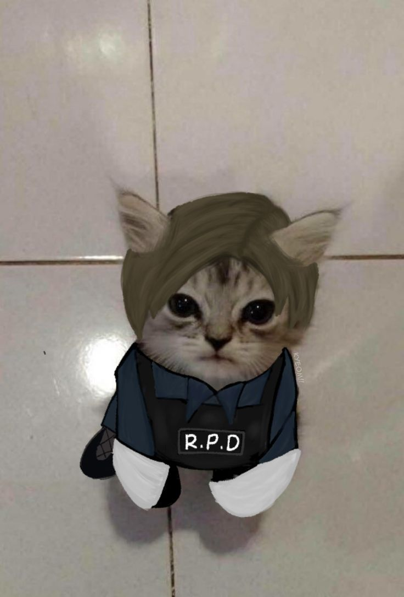
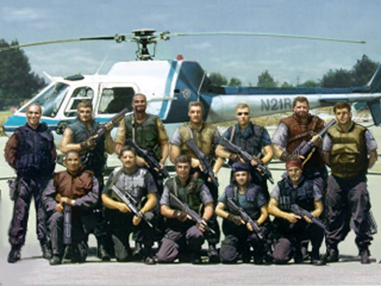
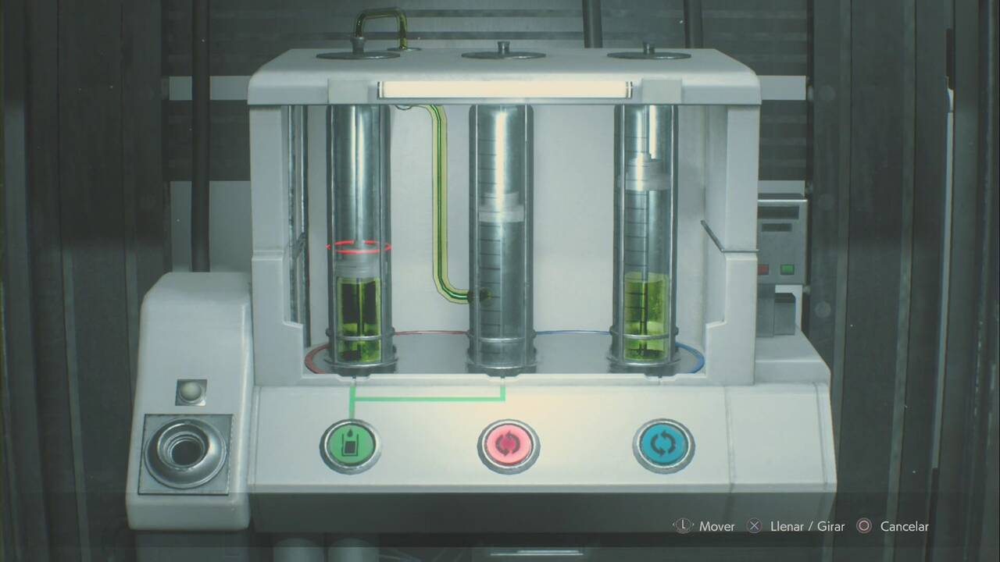
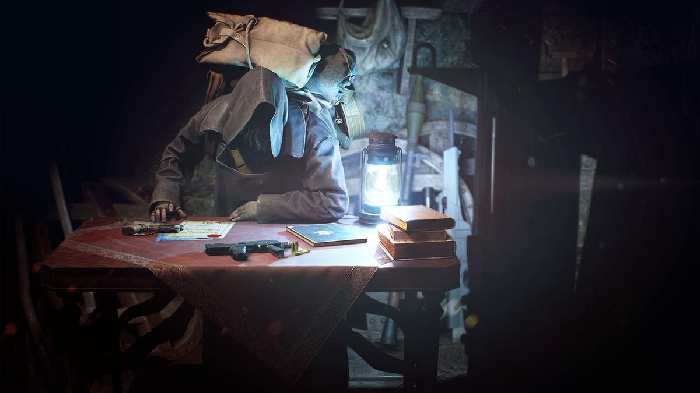

Me gusta la tecnologia y todo lo relacionado a ella como las computadoras, la programacion y mucho más. Mis pasatiempos son hacer ejercicio y jugar videojuegos, siendo mis favoritos la saga de Resident Evil como se podra notar xd. A parte de eso tambien me gustan los autos y los dinosaurios, mi pelicula favorita es Jurassic Park y vivo en la isla.

Estudie en el I.E Arcoiris hasta mi graduacion en 2023, llevo estudiando en la Unimar desde el 2024 y actualmente estoy cursando el 7mo trimestre de Ingenieria en Sistemas. He aprendido varios lenguajes de programacion como CSharp, Flutter, Java, Python y HTML/CSS ademas de SQL.

Hasta ahora mis materias favoritas serian las asociadas a la progrmacion y las bases de datos. He tenido la oportunidad de trabajar en disintos proyectos utilizando diferentes lenguajes de programacion como CSharp, Flutter, Java, etc. Entre mis mejores proyectos estan el haber hecho aplicaciones moviles con Flutter y un minijuego de carreras en CSharp.

Mis metas más que nada son aprender y ser cada vez más capaz de entender como funcionan los codigos y las funciones de los mismos pudiendo programar sin necesidad de pedir ayuda o consejos a la IA por ejemplo. Tambien poder trabajar en proyectos reales y quizas en algun momento hacer un juego o app por mi cuenta.